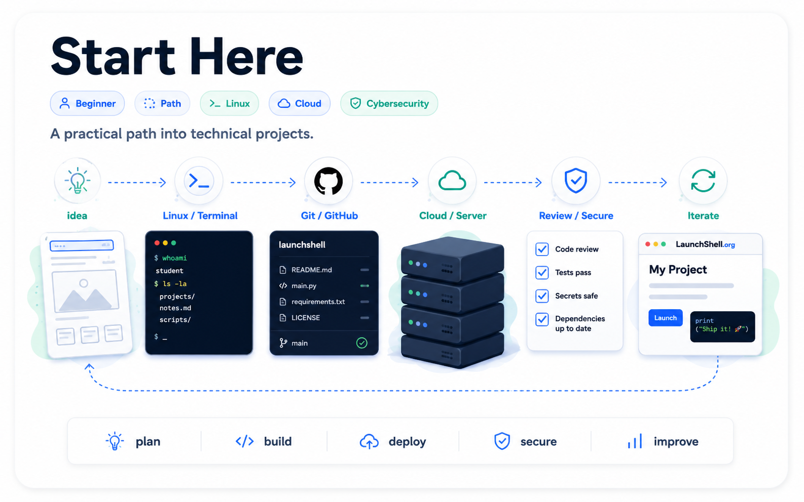

Build.
Launch.
Repeat.
LaunchShell is a student-built project journal and guide site for learning practical technical skills through real builds, simple explanations, and safe experiments.
Start with the Linux terminal, GitHub, Codespaces, cloud servers, Python scripts, web apps, electronics projects, and beginner-friendly cybersecurity concepts.

The LaunchShell Path
A beginner-friendly route through Linux, GitHub, SSH, cloud servers, Python tools, and safe cybersecurity labs.
The LaunchShell method
The site is built around the way technical skills are actually learned: make something real, back it up, change it, break it safely, restore it, and document what happened.
Start small
Use what you have: a Codespace, VM, Raspberry Pi, old laptop, or small cloud server.
Build something
Make a real thing first: a web app, server, circuit, script, guide, or lab.
Back it up
Use Git, snapshots, exports, copies, and restore points before risky changes.
Break and fix
Use logs, errors, configs, commits, and history to understand what actually happened.
Start here
These guides are the best first steps if you are new to Linux, GitHub, cloud servers, or technical projects.
Suggested learning paths
These paths connect guides and projects in a practical order. Use them when the full site feels too large and you want a clear starting route.
Featured guides
Start with core tools and concepts before moving into larger projects. These guides focus on Linux, cloud servers, networking, cybersecurity, and student-friendly workflows.
Featured projects
Practical builds that show how systems work, how mistakes happen, and how to recover when something breaks.
Free and low-cost student resources
The resources page collects tools that students can use to build real projects, not just collect free accounts.